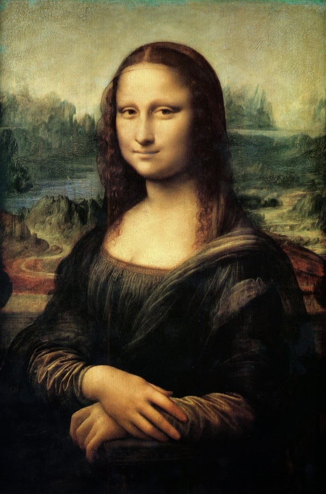
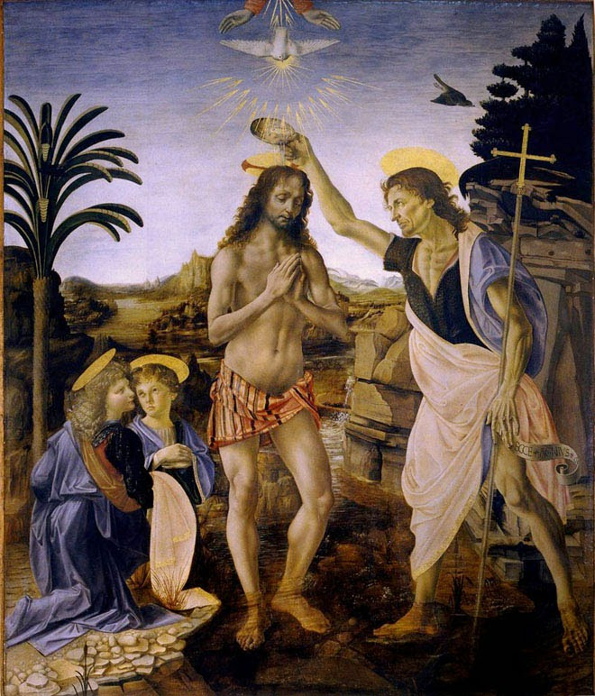
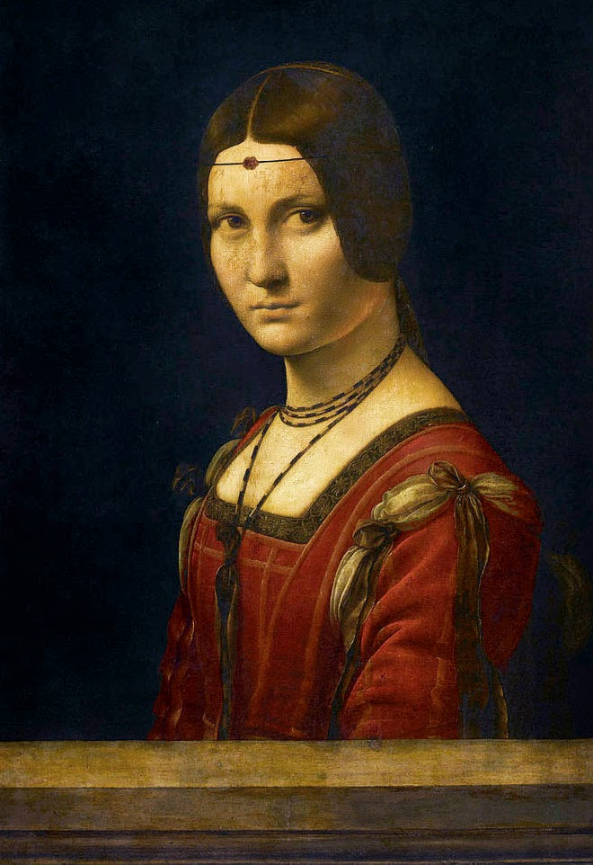
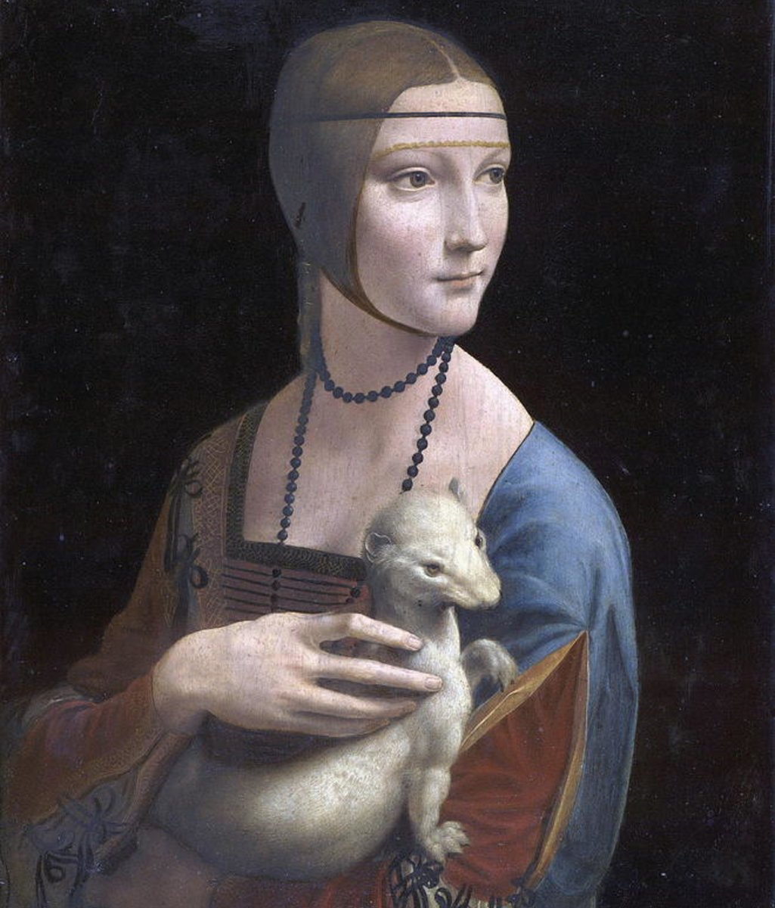
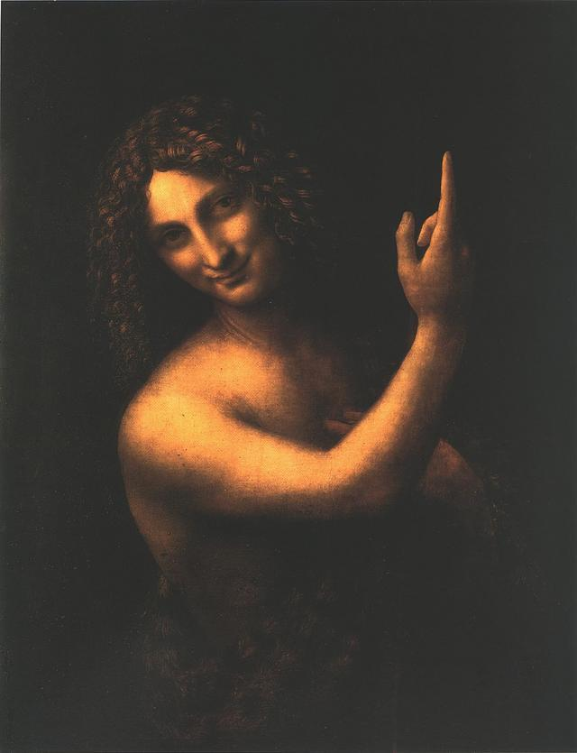
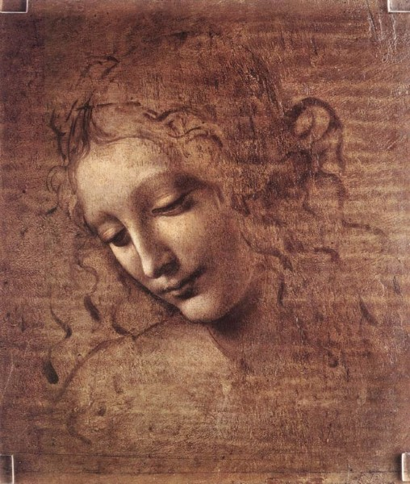

Virtual Art Gallery
Mona Lisa

The Mona Lisa, an iconic masterpiece created by the renowned Italian artist Leonardo da Vinci, is one of the most famous and enigmatic paintings in the world. This portrait captures the captivating gaze of a woman believed to be Lisa Gherardini, the wife of Florentine merchant Francesco del Giocondo.
Creation date: 1503 - 1506
The Baptism of Christ

The Baptism of Christ, a renowned masterpiece by Leonardo da Vinci, captures a pivotal biblical event with profound artistry and symbolism. This stunning artwork depicts the moment of Christ's baptism in the River Jordan.
Creation date: 1472 - 1475
Portrait of an Unknown Woman

"Portrait of an Unknown Woman" is a artwork attributed to the Renaissance genius, Leonardo da Vinci. This enigmatic portrait showcases da Vinci's exceptional talent in capturing the subtle nuances of human expression and emotion.
Creation date: 1490 - 1496
Lady with an Ermine

The painting depicts Cecilia Gallerani holding an ermine, which was seen as a symbol of purity and was associated with nobility during the Renaissance era. Leonardo's attention to detail and his mastery in capturing the subject's grace and natural beauty are evident in every brushstroke, making the artwork a true testament to his artistic brilliance.
Creation date: 1489 - 1490
St. John the Baptist

Leonardo da Vinci's painting, "St. John the Baptist," is a striking representation of the revered biblical figure and one of the masterpieces from the later years of the artist's career.
Creation date: 1513 - 1516
La Scapigliata

"Head of a Young Woman," also known as "La Scapigliata," is an enigmatic portrait created by the Renaissance master, Leonardo da Vinci. This artwork exemplifies Leonardo's unparalleled ability to capture the subtleties of human emotion and expression.
Creation date: 1508 - 1510